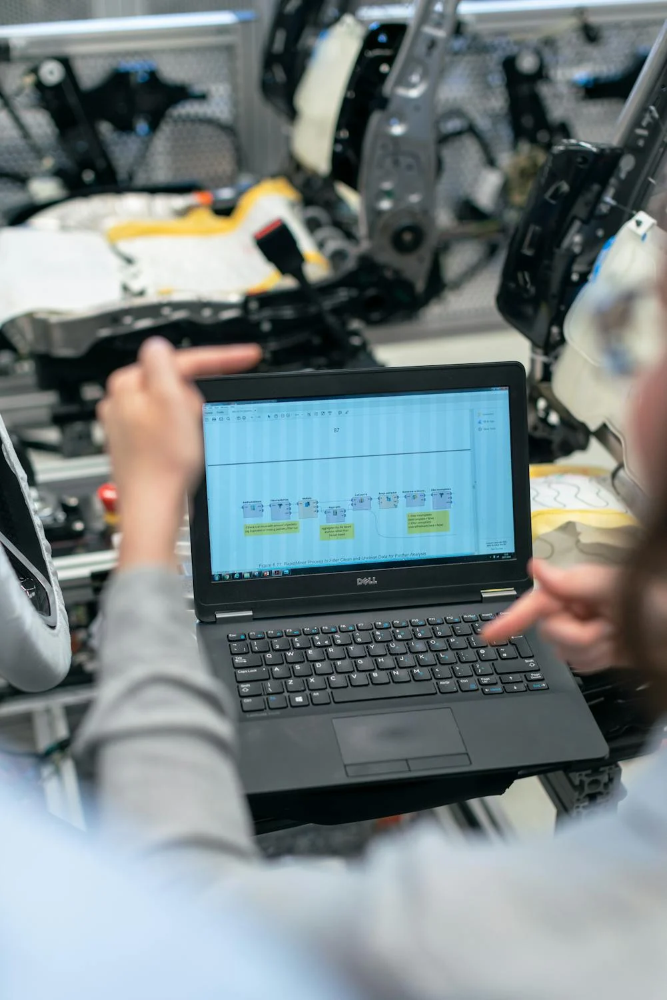
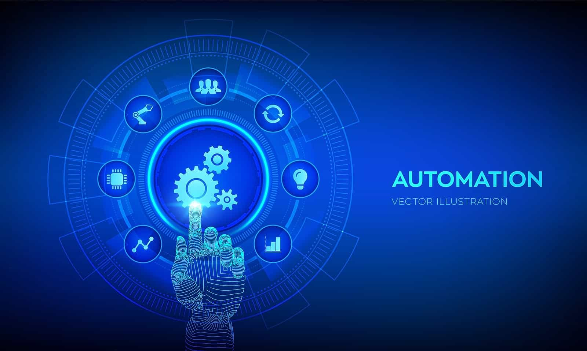

CI/CD Pipelines

Amina Safir
Conception et automatisation des pipelines CI/CD pour un déploiement rapide et fiable.
Expérience : 8 ans
Réserver - 10$Infrastructure as Code
Rachid Ait El Kadi
Implémentation d'Infrastructure as Code (IaC) avec Terraform et Ansible pour l'automatisation.
Expérience : 6 ans
Réserver - 99$Containers et Kubernetes
Layla Chafai
Optimisation et gestion des applications conteneurisées avec Docker et Kubernetes.
Expérience : 10 ans
Réserver - 90$Surveillance et Monitoring

Samir Lahlou
Mise en place de solutions de monitoring avec Prometheus et Grafana pour une visibilité complète.
Expérience : 9 ans
Réserver - 30$Cloud Computing

Khalid Tazi
Migration et gestion des infrastructures sur AWS, Azure ou Google Cloud Platform.
Expérience : 7 ans
Réserver - 80$Gestion des Logs
FSara Amrani
Implémentation de systèmes centralisés de gestion des logs avec ELK Stack.
Expérience : 5 ans
Réserver - 50$Test Automation
Omar Benyahia
Automatisation des tests pour assurer la qualité continue avec Jenkins et Selenium.
Expérience : 6 ans
Réserver - 89$Gestion des Configurations
Mehdi Idrissi
Déploiement et gestion de configurations automatisées avec Chef et Puppet.
Expérience : 7 ans
Réserver - 30$